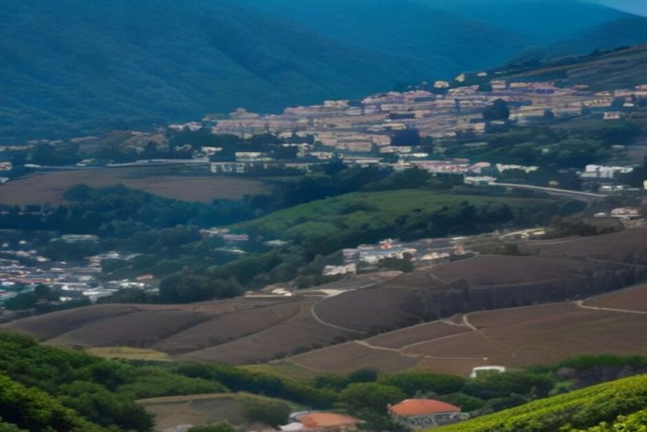
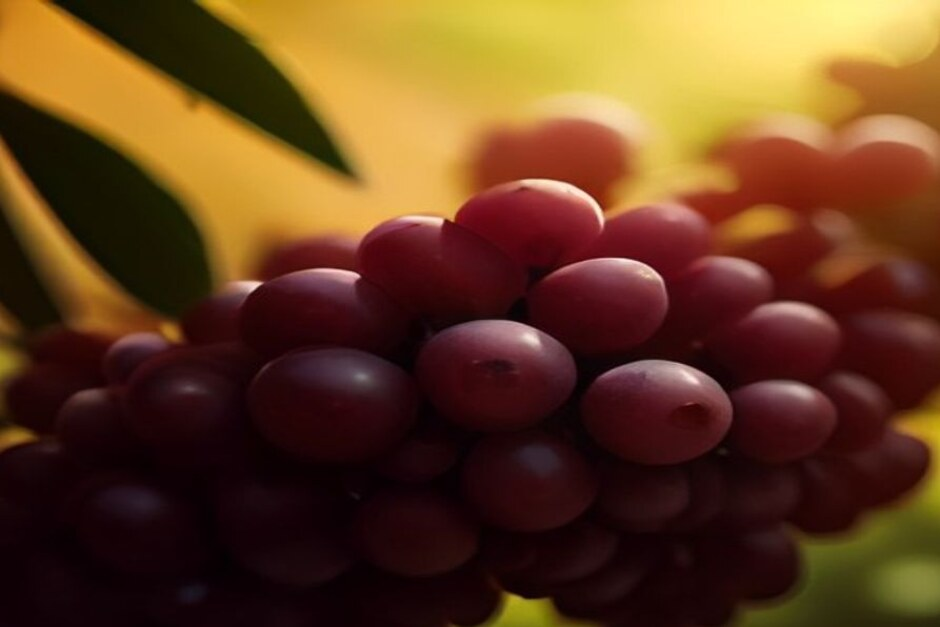

La Festa del Vino di Madeira si svolge dal 23 agosto al 13 settembre 2026, con i principali eventi di vendemmia e pigiatura concentrati a Estreito de Câmara de Lobos nel weekend conclusivo del festival, dal 10 al 13 settembre. Ecco cosa succede davvero, e come assistervi da Funchal.
Cos'è la Festa del Vino di Madeira?
La Festa del Vino di Madeira, o Festa do Vinho da Madeira, è la celebrazione annuale della vendemmia dell'isola — un mix di spettacoli folcloristici, degustazioni di vino, musica dal vivo e, al centro di tutto, la rievocazione della pigiatura tradizionale dell'uva che ha prodotto il vino Madeira per secoli, prima dell'arrivo dei torchi meccanici. Si articola in due parti: un programma più sobrio di degustazioni e concerti a Funchal, e un weekend di vendemmia più vivace e coinvolgente su nelle vigne di Estreito de Câmara de Lobos.

Quando si svolge la Festa del Vino di Madeira nel 2026?
Il festival nel suo complesso si estende dal 23 agosto al 13 settembre 2026. La Settimana del Folklore Europeo lo apre dal 23 al 27 agosto, il Madeira Wine Lounge in Praça do Povo a Funchal va dal 27 agosto al 13 settembre, e i festeggiamenti della vendemmia a Estreito de Câmara de Lobos occupano il weekend finale, dal 10 al 13 settembre — il che significa che i giorni più intensi si stanno svolgendo proprio adesso.
Cosa succede a Estreito de Câmara de Lobos?
È il momento clou del festival, che si svolge nelle vigne terrazzate sopra Câmara de Lobos, dove viene ancora coltivata gran parte dell'uva da vino dell'isola. Il 12 settembre, una vendemmia dal vivo inizia alle 10:00, seguita alle 11:00 da un corteo folcloristico che rievoca la raccolta all'antica in abiti tradizionali, e poi dalla pigiatura dell'uva vera e propria — a piedi nudi, nei lagares di legno, al suono della musica dal vivo. Stand gastronomici e di vino locale vengono allestiti in tutto il paese per l'intero weekend, e l'ingresso ai festeggiamenti è gratuito.
Cos'è la pigiatura dell'uva, e si può partecipare?
La pigiatura dell'uva è il metodo tradizionale per pressare l'uva da vino con i piedi in una vasca di legno poco profonda chiamata lagar, una tecnica ancora dimostrata ogni anno, anche se la produzione moderna utilizza torchi meccanici. Durante l'evento a Estreito, i visitatori sono invitati a rimboccarsi i pantaloni e unirsi alla pigiatura insieme agli abitanti del posto — è una delle poche feste madeirensi in cui guardare non è l'unica opzione.

Cos'altro succede durante il festival?
Oltre al weekend della vendemmia, il Madeira Wine Lounge in Praça do Povo tiene vivo il lato funchalese del festival fino al 13 settembre, con vino Madeira, gastronomia locale e musica dal vivo ogni sera. I Concerti nelle Vigne aggiungono un ulteriore livello il 5, 6, 12 e 13 settembre, allestiti direttamente tra le terrazze anziché in un luogo convenzionale, mentre la Settimana del Folklore Europeo, a fine agosto, apre il programma con gruppi di danza e musica provenienti da tutto il continente.
Come si arriva a Estreito de Câmara de Lobos da Funchal?
Gli autobus Rodoeste 3, 7 e 96 partono dal deposito della compagnia sull'Avenida do Mar a Funchal in direzione di Câmara de Lobos, con una breve coincidenza locale da lì fino a Estreito de Câmara de Lobos, dove si svolge la pigiatura. Anche andare in auto è semplice, anche se i parcheggi si fanno scarsi durante il weekend della vendemmia — arrivare prima di mezzogiorno il 12 offre le migliori possibilità di trovare posto.
Si può scoprire la regione vinicola anche in barca?
Sì — Câmara de Lobos, il villaggio di pescatori proprio sotto le terrazze vinicole di Estreito, è la prima tappa delle gite in barca privata di Chifbay da Funchal, così puoi ammirare dal mare la stessa costa che incornicia la vendemmia, prima di salire alla festa sulla terraferma. È un ottimo modo per unire le due facce dello stesso paesaggio in un'unica giornata — il mare al mattino, la vigna nel pomeriggio.
Il vino viene ancora pressato come da secoli. Anche la vista sulle vigne dal mare non è cambiata granché.
Se sei a Madeira prima del 13 settembre 2026, la festa del vino merita un pomeriggio dedicato — gratuita, davvero coinvolgente, e ambientata in uno dei tratti di costa terrazzata più spettacolari dell'isola.
Domande frequenti
Quando si svolge la Festa del Vino di Madeira nel 2026?
Dal 23 agosto al 13 settembre 2026, con il weekend principale della vendemmia a Estreito de Câmara de Lobos dal 10 al 13 settembre.
Cosa succede durante la pigiatura dell'uva a Estreito de Câmara de Lobos?
Una vendemmia dal vivo alle 10:00 del 12 settembre, un corteo folcloristico alle 11:00, poi la pigiatura dell'uva a piedi nudi nei lagares di legno con musica dal vivo.
L'ingresso alla Festa del Vino di Madeira è gratuito?
Sì, l'ingresso ai festeggiamenti della vendemmia e al Wine Lounge è gratuito; gli stand gastronomici e le bevande sono a pagamento.
Come si arriva da Funchal ai festeggiamenti di Estreito de Câmara de Lobos?
Gli autobus Rodoeste 3, 7 e 96 dall'Avenida do Mar, con una breve coincidenza locale fino a Estreito.
È possibile vedere i villaggi vinicoli anche in barca?
Sì — Câmara de Lobos, sotto le vigne di Estreito, è la prima tappa delle gite in barca privata di Chifbay da Funchal.